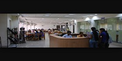
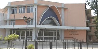
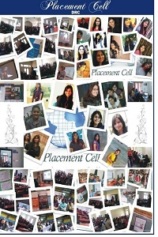
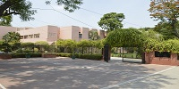

Library and Reading Room

Library and Reading Room facilities are open only to students and staff of the college. The College Library possesses an excellent collection of books, journals/periodicals. The Library is open from 9 a.m. to 5 p.m. Monday to Friday. For the purpose of issuing, books are categorized into three sections: General Section, Reserved Section and Reference Section. The library is well equipped with latest technical facilities alongside a developed Brail Section with a software of Brail (Angel: Talking Digital Pocket Daisy Player, E-Book Reader, MP3 Player, Radio cum voice Recorder) for the benefit of reading, writing and listening to provide equal opportunity to differently-abled students.

Terms and Conditions for Issuing of Books
1. Before leaving the counter, the member should satisfy herself as to whether the book lent to her is in sound condition and if not, she shall immediately bring the matter to the notice of the Librarian otherwise she is liable to be held responsible for any loss/damage and would be required to replace it with a sound/fresh copy.
2. Periodicals, directories, encyclopedias, which might be difficult to replace and other such works as may be declared reference books by the Librarian shall not be lent out.
3. Members are not allowed to sub- lend the books of the library.
4. Students who return books later than the due date will be liable to pay a fine as decided by the college authorities from time to time.
5. At present the fine for general section books is Re. 1.00 per day for first fifteen days of delay. Thereafter, it will be Rs. 5.00 per day for one month, after which the fine will be Rs. 10.00 per day. Fine for Reserved Section books is Rs. 2.00 per day for first week and thereafter it is Rs. 10.00 per day.
6. Any infringement of the rules will deprive the member of the privilege of admission to and of borrowing books from the library.
7. Each student of M.A. course is entitled to borrow six books at a time.
8. The Library membership will be valid till the student leaves the college.
Timings for Issue and Return of Books
1. Books from General Section are issued and returned from 9.00 a.m. to 4.00 p.m.
2. Timings for issue of books from Reserved Section are from 12.30 p.m. to 4.00 p.m.
3. Books from Reference Section are only issued for consultation in the library against Reference Card from 9 a.m. to 5 p.m.
Laboratories

The College has well equipped and well managed laboratories for all the Science Courses offered, viz. Bio-Chemistry, Botany, Chemistry, Physics and Zoology. The Departments of Nutrition & Health Education, Maths and Psychology also have separate well equipped labs.
Computer Labs

The College has well equipped Computer Labs with Pentium machines with the latest configuration. The Labs have connectivity with the Delhi University intranet with access to the internet. The main computer lab has 38 computers and there is an additional computer lab for commerce and Maths students having 25 computers with internet facility.
Seminar Room

The Seminar Room of the College is the place for multifarious activities in the College throughout the year. The activities in the seminar room range from curricular and cocurricular seminars, lectures, debates, discussions and workshops to Student Union functions, NSS and Women Development Centre activities.
Amphitheater (Rangshala)

It offers a stage to the young students to hone their talent, communication and performing skills. It has been witness to many famous events and has provided a forum to many burgeoning artists.
College Auditorium -Sadbhavana Bhavan

The college auditorium Sadbhavana Bhawan with a large stage and a seating capacity of over 1400 is ideally suited for theatre activities and dramatics with plays having a large cast. All major intra-college and inter-college events also take place in the auditorium
Medical Aid

Medical room with an attendant nurse and first aid facilities is available. The students can also avail of the World University Health Service of the University of Delhi against the nominal annual fee of Rs.5/-..
College Canteen

The College canteen offers a varied menu at subsidized rates. The Nescafe Kiosk is also available
Bank

The College has banking facilities on its premises. The University Branch of Indian Overseas Bank operates in the College.

Placement Cell
The college placement cell aims to add value to the young minds of students both in terms of exposure, longer term vision, career choices, key skills required, skill gaps and guidance in overcoming their social exclusiveness.
It is a resource centre of information, guidance and counselling with free accessibility and internet based global connectivity and exchange of information on professional placements. It addresses both the academic and the career concerns and opportunities available for the final year students and internship programs for I & II year students.
It organizes audio-visual sessions of interactive skill – enhancing seminars / workshops and campus recruitment sessions conducted by various reputed companies and organizations for final year students.
The college placement cell also explores internship options for I and II year students, inculcates responsibility, leadership skills by encouraging them to volunteer for the cell. All the relevant information is shared online (FB group “Placement Cell”: https://www.facebook.com/groups/DRCPlacementCell/) as well as offline (“Placement Cell Notice Board”). The online platform is also being used for guiding students in making CVs in the uniform format to maintain a database of aspiring students, career – related queries/ counselling as well as feedback from the already – placed students.
Various reputed companies / organizations have been visiting the college for recruitment drive/ skill enhancing programmes/internships(both campus and on line) namely, Ernst &Young, S&P Capital IQ, Wipro Technologies, Protiviti, Tower Watson, SmartIcan, Genpact, KPMG, Career Launcher, CIMA Finitiatives Learning India Pvt Ltd (FLIP), Extramarks Education Pvt. Ltd., T.I.M.E, Lets Intern, IMS, S.P. Jain Institute of Management, JIMS , Smart Cube, HDFC – Life, IBS, Teach For India, Career Net, ICICI Prudential, Naukri.com, SDA Bocconi School of Management, Italy, ITM Group of Institutions, TalentVaria, Internshla.com, Letmedrive, GreenThumbs, EduMentor, Koovs.com, Aviva Life Insurance, Askme.com, Tap & Eat, University Express, Mannar, Fewtur.com, Inside IIT, Technical Journalism at Buying IQ. A large no. of students from different streams have been selected for jobs (with CTC ranging from ₹ 2.5 to ₹ 5.7 lacs p.a. plus additional benefits and scope for higher studies) ,internships and Masters’ programs.
The College Placement Cell also coordinates with the Central Placement Cell, University of Delhi and acts as an interface between the industry and University.
Hostel

Daulat Ram College hostel founded in 1974, is the ‘home away from home’ exclusively for outstation undergraduate students of Daulat Ram College with an intake capacity of 200 students. Due to limited number of seats, only meritorious students are selected for admission to the hostel.
Apart from various facilities, the hostel provides a comfortable and happy stay for the resident students. The hostel has well laid out lush green lawns and gardens which not only add beauty to the ambience but also help in providing peaceful and conducive atmosphere for studies. The hostel has been winning acclaim and awards for the best environment of hostels in Delhi University. It also has its own kitchen garden
The hostel is directly under the control of the Principal who is assisted by the Warden and the Hostel Admission Committee which is responsible for all admissions to the hostel.